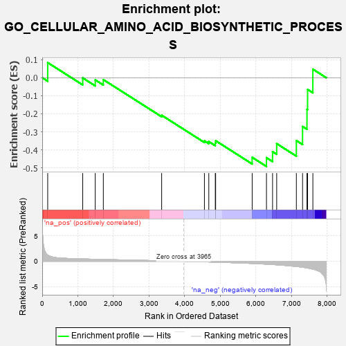

| | | Dataset | 7d |
| Phenotype | NoPhenotypeAvailable |
| Upregulated in class | na_neg |
| GeneSet | GO_CELLULAR_AMINO_ACID_BIOSYNTHETIC_PROCESS |
| Enrichment Score (ES) | -0.4916698 |
| Normalized Enrichment Score (NES) | -1.2086835 |
| Nominal p-value | 0.24022347 |
| FDR q-value | 0.61634785 |
| FWER p-Value | 1.0 |
Table: GSEA Results Summary

Fig 1: Enrichment plot: GO_CELLULAR_AMINO_ACID_BIOSYNTHETIC_PROCESS
Profile of the Running ES Score & Positions of GeneSet Members on the Rank Ordered List
| PROBE | GENE SYMBOL | GENE_TITLE | RANK IN GENE LIST | RANK METRIC SCORE | RUNNING ES | CORE ENRICHMENT | | 1 | MTRR | | | 154 | 1.217 | 0.0836 | No |
| 2 | SDSL | | | 1137 | 0.456 | -0.0012 | No |
| 3 | GPT | | | 1488 | 0.392 | -0.0121 | No |
| 4 | PLOD3 | | | 1715 | 0.353 | -0.0106 | No |
| 5 | ILVBL | | | 3352 | 0.097 | -0.2081 | No |
| 6 | AASS | | | 4552 | -0.106 | -0.3499 | No |
| 7 | MTAP | | | 4675 | -0.133 | -0.3540 | No |
| 8 | BCAT1 | | | 4857 | -0.168 | -0.3625 | No |
| 9 | CBS | | | 4867 | -0.170 | -0.3492 | No |
| 10 | CDO1 | | | 5892 | -0.432 | -0.4414 | No |
| 11 | OAT | | | 6293 | -0.572 | -0.4433 | Yes |
| 12 | SRR | | | 6464 | -0.646 | -0.4100 | Yes |
| 13 | CLN3 | | | 6580 | -0.699 | -0.3653 | Yes |
| 14 | DPYD | | | 7132 | -1.019 | -0.3484 | Yes |
| 15 | ASPG | | | 7306 | -1.178 | -0.2705 | Yes |
| 16 | OTC | | | 7430 | -1.305 | -0.1755 | Yes |
| 17 | GGT1 | | | 7447 | -1.329 | -0.0651 | Yes |
| 18 | ASNS | | | 7595 | -1.547 | 0.0473 | Yes |
Table: GSEA details [plain text format]
Fig 2: GO_CELLULAR_AMINO_ACID_BIOSYNTHETIC_PROCESS: Random ES distribution
Gene set null distribution of ES for GO_CELLULAR_AMINO_ACID_BIOSYNTHETIC_PROCESS